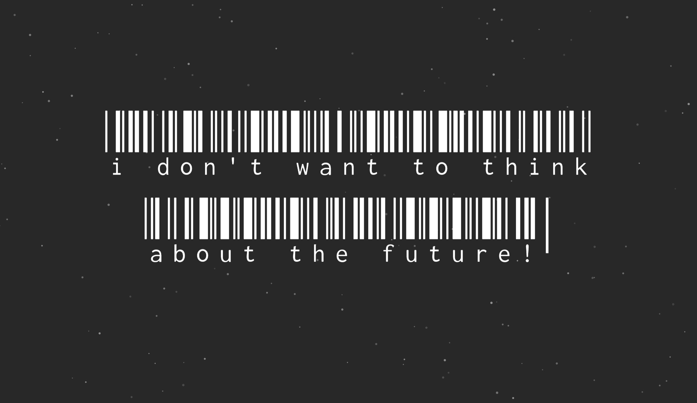
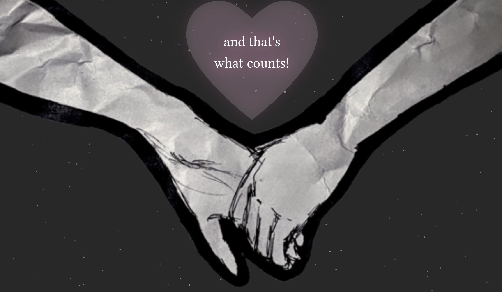
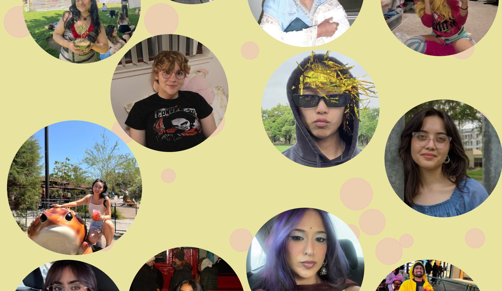
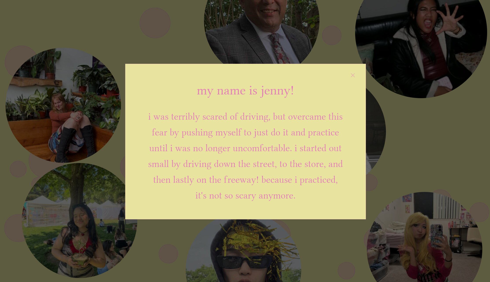
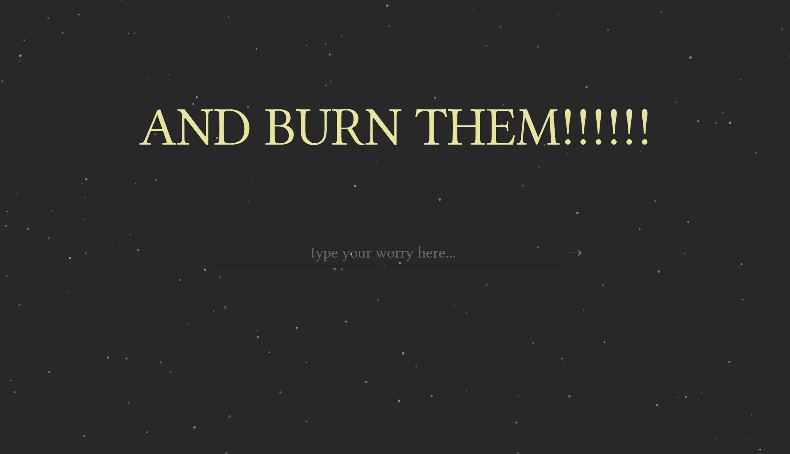
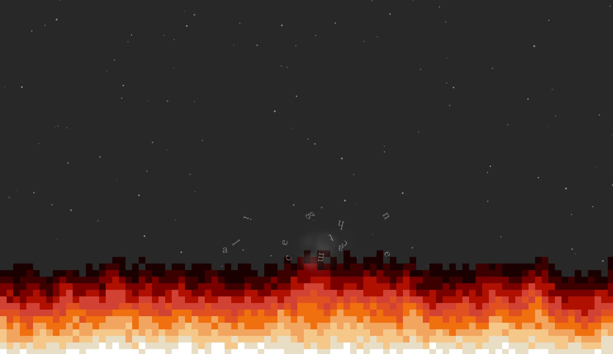

Overview
This project is a scroll-based interactive web experience designed for people in their early twenties navigating uncertainty about the future. The project was built entirely with HTML, CSS, and JavaScript, and explores a feeling my peers and I talk about often: the fear of what comes next. The central message is simple — even when the future feels overwhelming, you're not facing it alone.
The Concept
The idea came directly from conversations I was having with the people around me. As a graduating student myself, the anxiety of an uncertain future felt like something worth addressing, not with data or warnings, but with honesty and warmth. Rather than creating something cautionary or dystopian, I wanted to build something that left people feeling seen and a little less scared.
Research
During my comparative analysis, I was initially drawn to infographic-style sites that led with statistics and research data. My first instinct was to build something fact-driven and informational. But the more I explored, the more I realized that data alone couldn't carry the emotional weight I was going for. I pivoted toward a more personal, story-driven approach — one that prioritized feeling over information. The greyscale aesthetic of some reference sites still influenced my color direction: I carried that restraint into the early stages of the experience before intentionally breaking into warmth and color as the narrative shifts.
The Design Process
The experience opens with a dark grey background and white text. Clinical, slightly cold, meant to mirror the feeling of isolation and disconnection that often accompanies anxiety about the future. As the user scrolls deeper, the page transitions to vibrant yellow with soft pink bubbles, shifting the atmosphere toward hope and connection.


The opening dark grey aesthetic — clinical and cold, designed to mirror the feeling of isolation.


The peer photo journal section — real people, real fears, circular portraits on a warm yellow background.


The cathartic ending — a hand-drawn illustration followed by the fire animation where users burn their worries.
Reflection
This project taught me how nonlinear the design process can be, especially when the subject matter is open-ended and personal. I changed direction multiple times and ended up somewhere completely different from where I started. I learned that I design best intuitively, making decisions as I go and refining as things take shape rather than following a rigid plan from the beginning.
I'm most proud of the peer photo section. It felt genuinely effective at delivering the project's core message, and making it made me feel better about my own worries too. The hardest part was committing to an idea. I kept second-guessing whether something more data-driven would be more "legitimate." I'm glad I ignored that instinct and built something true to what I actually wanted to say.
Other Coursework
nisha's froyo consumption 2026 → wednesday with nisha →Other Works